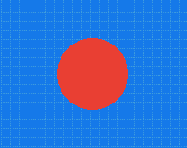
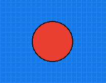
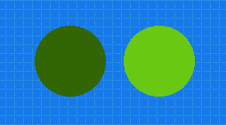
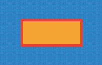
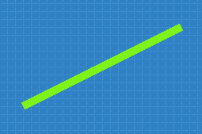
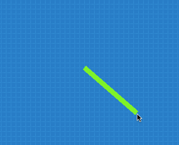

У цьому розділі ми побачимо, як можна легко малювати прості графічні примітиви: лінії, кола тощо.
Розпочнемо з дуже простого способу малювання. Отже, є актор під назвою "Pizarra" (дошка), якого ми можемо розмістити на сцені, щоб малювати прості геометричні фігури.
Коли ви додаєте актора у вигляді дошки, ви помітите, що він підтримує малювання певних графічних примітивів.
Для малювання кіл використовується функція, яка малює вміст кола на основі 4 параметрів:
Наприклад, цей виклик функції створить коло в точці x=100 y=0 з радіусом 40 пікселів, зафарбоване у червоний колір:

За бажанням, якщо ви хочете намалювати контур кола іншим кольором або певною товщиною, ви можете викликати цю функцію:

Перші 3 параметри ідентичні попередній функції, вони відповідають параметрам x, y та radio, тоді як четвертий аргумент визначає колір межі, а останній - товщину межі у пікселях.
У наведених вище прикладах використовувались такі кольори, як "rojo" (червоний), "negro" (чорний) і "verde" (зелений); однак, це не єдиний спосіб визначення кольорів. Назви кольорів корисні та легко запам’ятовуються, але вони не пропонують великої різноманітності.
Ще один гнучкий спосіб визначити кольори - це використовувати функцію pilas.colores.generar. Ця функція генерує колір шляхом "змішування" трьох компонентів кольору (червоного, зеленого та синього).
Кожен компонент кольору має бути числом від 0 до 255, наприклад:
let color_verde_oscuro = this.pilas.colores.generar(0, 100, 0);
let color_verde_claro = this.pilas.colores.generar(0, 200, 0);У свою чергу, коли ми маємо згенерований колір, ми можемо використовувати його у функціях для малювання. Наприклад, якщо ми хочемо намалювати два кола цим кольором, ми можемо написати наступне:
this.dibujar_circulo(-50, 50, 40, color_verde_claro);
this.dibujar_circulo(+50, 50, 40, color_verde_oscuro);
Подібно до кіл, існують також функції для малювання прямокутників.
this.dibujar_rectangulo(0, 0, 120, 50, "naranja");
this.dibujar_borde_de_rectangulo(0, 0, 120, 50, "rojo", 5);
Аргументами цих функцій є: у даному разі точка центру x=0 y=0, ширина і висота прямокутника, колір.
Щоб намалювати лінії, ми повинні вказати дві координати, колір і товщину лінії.
Наприклад, щоб провести "verde" (зелену) лінію від точки (0, 0) до точки (200, 100), ми можемо написати:

Актор "Pizarra" (дошка) може рухатися на екрані і мати фізичну форму. Його також можна використовувати для створення кадрової анімації.
Актор "Pizarra" містить функцію з назвою limpiar, яку, в поєднанні з функціями малювання, можна використовувати для створення простої анімації.
Наприклад, якщо ми хочемо намалювати лінію, яка постійно вказує на положення миші, ми можемо зробити це так, використовуючи функцію "actualizar":
actualizar() {
this.limpiar();
this.dibujar_linea(0, 0, this.pilas.cursor_x, this.pilas.cursor_y, "verde", 10);
}